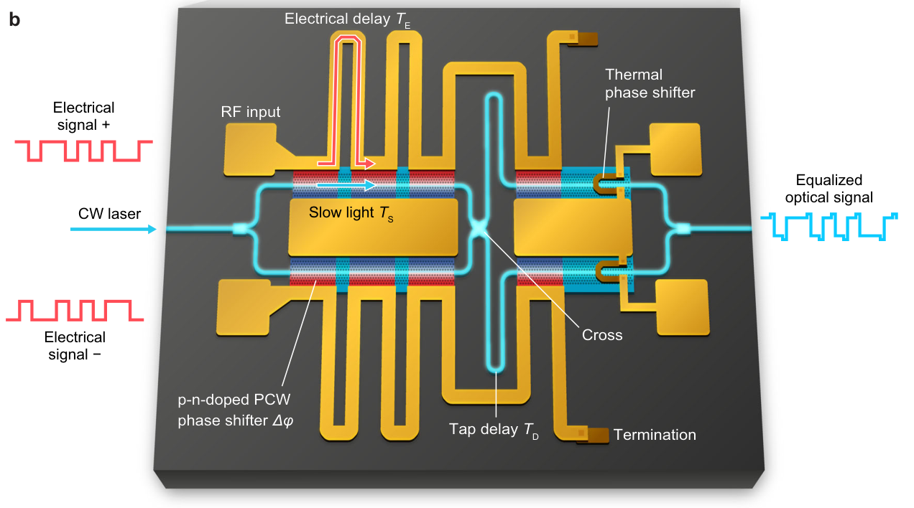

Reduced-DSP 200G/λ low-voltage slow-light silicon modulator enabled by built-in EO equalizer
Nature Communications, vol. 17, Art. no. 10446, Oct. 2026. PDF
Related presentation: OFC 2026
Press release, EurekAlert!, EE Times Japan, OPTRONICS ONLINE, Semiconductor Engineering